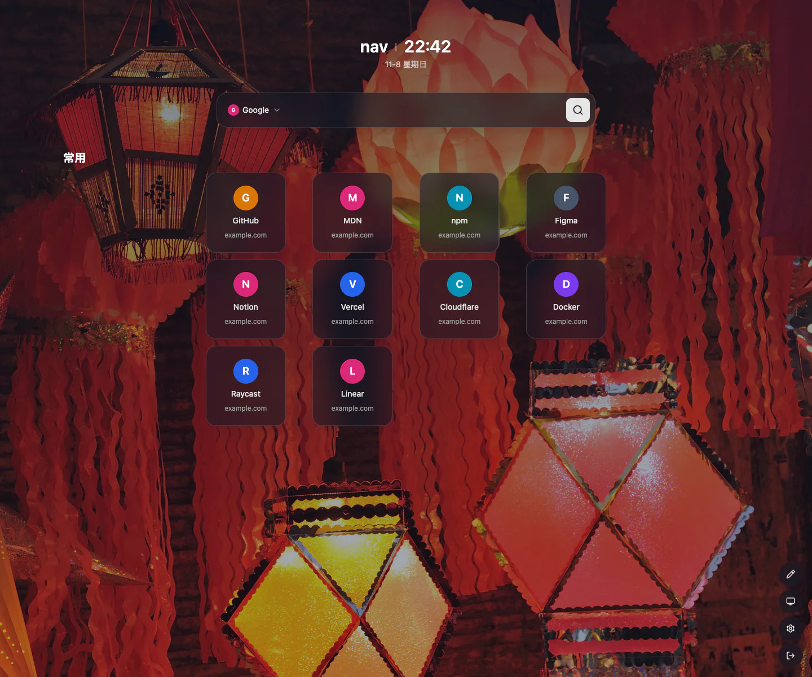
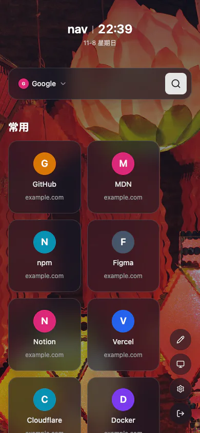

classic 排布实测：整块居中 + 末行左对齐
站点设置 columns = 4、linkStyle = classic，本地真跑
worker + 真实 D1 数据（1 个分类 10 条链接），Chrome 158 实测
getBoundingClientRect() 与 getComputedStyle()。
桌面 1440×1200 窄屏 390×844 普通模式 + 首页编辑模式
实测数字（columns = 4）
| 项目 | 实测值 |
|---|---|
| 容器类名 |
mx-auto flex w-full flex-wrap content-start justify-start
gap-y-3
→ justify-content: flex-start（不含
justify-center）
|
| 行组宽度 | 710px（4×141.5 + 3×48） |
| 行组是否居中 | 正文内容区 112–1328（宽 1216）；行组 365–1075，中心 720 = 内容区中心 720，偏移 0px |
| 第 1 行（满行 4 块） | x = 365 … 1075，间距 47.98px |
| 第 2 行（满行 4 块） | x = 365 … 1075，间距 47.98px |
| 第 3 行（末行 2 块） | x = 365 … 696 —— 起点与满行完全一致（末行左对齐、上下列位对齐） |
| 砖尺寸 | 141.5 × 141.5 px（与列数无关） |
| columns = 8（回归对照） | 行组 1216px 占满内容区，首行 8 块 112–1328（间距 12），末行 2 块从 112 起排 |
| 首页编辑模式（columns = 4） | 同一容器类名、同一 710px 行组；砖位 365 / 554.5 / 744 / 933.5，末行 2 块 + 「+」砖依次从 365 起排 |
| 窄屏 390 宽 |
行组 358px = 内容区全宽；每行 2 块、间距 12px；scrollWidth =
clientWidth = 390（不溢出）
|
截图：桌面 1440×1200（columns = 4）

截图：窄屏 390×844（columns = 4）

口径说明
-
columns是成块列数：桌面按这个数成块，行组宽度 =n×141.5 + (n−1)×48，整块由mx-auto居中。 -
满行正好填满行组宽度，
justify-start对满行没有影响；只有不满的末行 能看出差别：砖从行组左端开始，与满行同列对齐。 - 砖固定 141.5px、间距 12–48px、编辑模式同口径、compact / wide 三档不变，dnd-kit 策略未动。